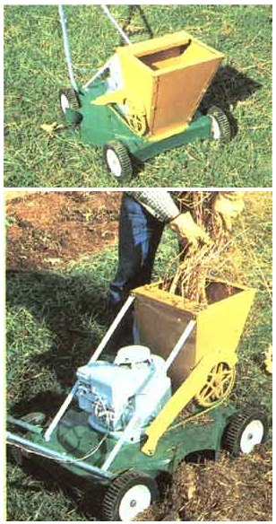
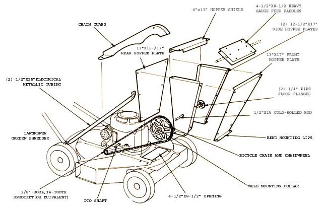

Mom's homemade mower-with-mandibles can put a whole new twist on an old garden grind:
Compost is one of the gardener's most versatile allies. This nutrient-rich humus not only is organic and free for the making but can serve equally well as a fertilizer, tilthbuilder, or biodegradable mulch for soil-and-weed control.
The hitch is, of course, that the decomposition process responsible for turning trash into treasure can take months. How ever, that long wait can be reduced to a matter of days if the organic feedstock is properly prepared. And the key to that preparatory procedure is shredding everything that goes into a compost heap. You see, by breaking up the material and increasing its exposed surface area, you can improve bacterial action . . . and ultimately contribute to the speed and quality of decomposition.
Now serious gardeners have been known to go out and spend in excess of $1,000 for shredder/chippers to handle their composting chores . . . but you can achieve almost the same results at an out-of-pocket expense of $40 or $50, just by making minor modifications on a secondhand lawn mower!
What you'll need is a working self-propelled rotary mower (the kind with the small power takeoff (PTO) shaft at the side of the engine) . . . some sheet metal (the "skin" from an old washer or dryer would work fine) . . . the chainwheel, chain, and guard from a junk bicycle . . . a small sprocket to fit the engine's PTO shaft . . . a 15" piece of 1/2" rod . . . two 114" pipe floor flanges . . . a couple of 1/2" X 25" lengths of electrical metallic tubing . . . and some assorted fastening hardware. (If you just can't locate a good self-driven mower, a conventional rotary model will do, though you'll have to carefully hand-feed material into it when using the device.)
Start your project by looking over the mower and making certain there's enough room on its deck to allow you to add a feed chute at the front. If there appears to be a problem, try turning the engine 180° on its platform and remounting it. Once the correct position is established, cut a 4-1/2" X 8-1/2" opening in the top of the deck, centering it directly in front of the powerplant. Then, using the sheet metal, form up a 16"-tall, wide-mouthed (11-1/2" X 13"), tapered hopper, with a 3" shield at the top and some mounting lips at the bottom . . . using our illustration as a guide.
After assembling the chute, bolt it squarely over the deck opening and support it with the two conduit braces (just flatten and bend their ends, and bolt the supports between the back of the hopper and the rear of the mower platform). Next, you can secure the small sprocket in place on the engine's PTO shaft, afterward stringing the chain over both cogged wheels. By pulling the links taut, you can approximate a good location for the feed-paddle shaft, which should sit midway between the front and rear walls of the hopper but high enough to permit the large sprocket complete clearance.
Once that location is established and marked, bolt the floor flanges in place over the shaft marks and drill 1/2" holes to accept the paddle axle. After fastening the chainwheel to the shaft by welding a collar between the two parts, slip the entire assembly into place and mark it for drilling. Then the appropriately sized heavy-gauge metal plates can be bolted around and through it. (Those feed paddles must be sized to rotate freely within the chute, with about half an inch of clearance all around.)
Once the paddle assembly's installed, you can measure the chain and link it in place, fastening the guard between the deck and the side of the hopper. You might also want to replace the standard mower blade with a "high lift" model . . . which has kicked-up tips that improve the machine's shredding action by keeping the compost material in the path of the choppers for a longer period of time.
With that improvement made, you'll have created an inexpensive but impressive garden helper that's not only mobile (thus allowing you to mix custom compost blends to suit the specific needs of various sites, soils, or plants under cultivation) but suitable, in addition, for pulverizing and refining already-composted material for special applications.
|
 STAFF PHOTO |
 |
|